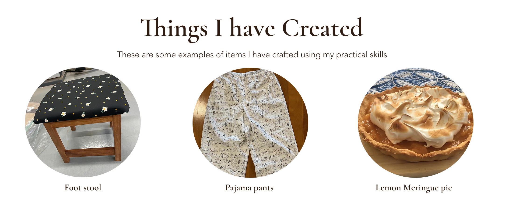

Knowledge and Skills
Here you will learn more about theknowledge and skills I have to equip myself as a TAS Teacher
Personal Knowledge and Skills
Technology teachers help engage students in real-world situations using design and production assignments. These assignments and ways of thinking allow students to develop critical thinking and problem-solving skills as they are needed to develop solutions to case studies or problems provided. Apart from the four key areas of the curriculum, there is some personal knowledge and skills that can be helpful for teachers to use throughout the classroom and content teaching stages. The first would be good communication skills. Within any TAS classroom, the teacher is needed to explain ideas, concepts, and critical safety features of the subject clearly to the students. For example, within a practical classroom, a clear explanation of safety rules, features and consequences is vital for the safety of both students and teachers alike. Having the knowledge of students' abilities and knowing when something is too difficult for a student is also vital for TAS teachers. There is many complex tools, machinery and equipment used in a common TAS classroom, therefore having a good sense of the student's abilities to handle a design and production assignment is helpful. Teachers can make informed recommendations to students when they think they are starting an assignment or design project that is too difficult for their skill set. They are also able to make suggestions on how they can adapt their idea to better suit their skill set and meet the needs of the assignment
Professional Knowledge and Skills
It is also important for myself and other TAS teachers to become fully aware of the curriculum and content requierments for each of the four areas of tech mandatory. I have summarised these points directly from the NESA website and can be accessed using the links below. Those areas allow for tech mandatory teachers to be fully capable of teaching all possible subjects at a year 7 or year 8 level. It includes both practical skills such as prototype making or critical thinking skills such as how to evaluate or apply knowledge to certain situations and provide solutions to real world problems.